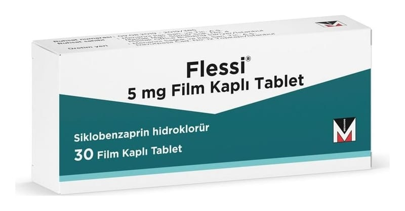

Flessi 5 mg Film Kaplı Tablet, 30 Adet

Ne için kullanılır
KT · Bölüm 1 FLESSİ, beyaz, yuvarlak, bikonveks, çentikli film kaplı tablettir. Her bir film kaplı tablet, 5 mg siklobenzaprin HCl içerir. Siklobenzaprin, akut ağrılı (Hastada belirgin bir hastalığın bulgusu olarak aniden başlayan ağrı) kas iskelet sistemi hastalıklarına bağlı kas spazmlarının kısa süreli tedavisinde kullanılır. Bu ilacı kullanmaya başlamadan önce bu KULLANMA TALİMATINI dikkatlice okuyunuz, çünkü sizin için önemli bilgiler içermektedir. Bu kullanma talimatını saklayınız. Daha sonra tekrar okumaya ihtiyaç duyabilirsiniz. Eğer ilave sorularınız olursa, lütfen doktorunuza veya eczacınıza danışınız. Bu ilaç kişisel olarak sizin için reçetelendirilmiştir, başkalarına vermeyiniz. Bu ilacın kullanımı sırasında, doktora veya hastaneye gittiğinizde doktorunuza bu ilacı kullandığınızı söyleyiniz. Bu talimatta yazılanlara aynen uyunuz. İlaç hakkında size önerilen dozun dışında yüksek veya düşük doz kullanmayınız.